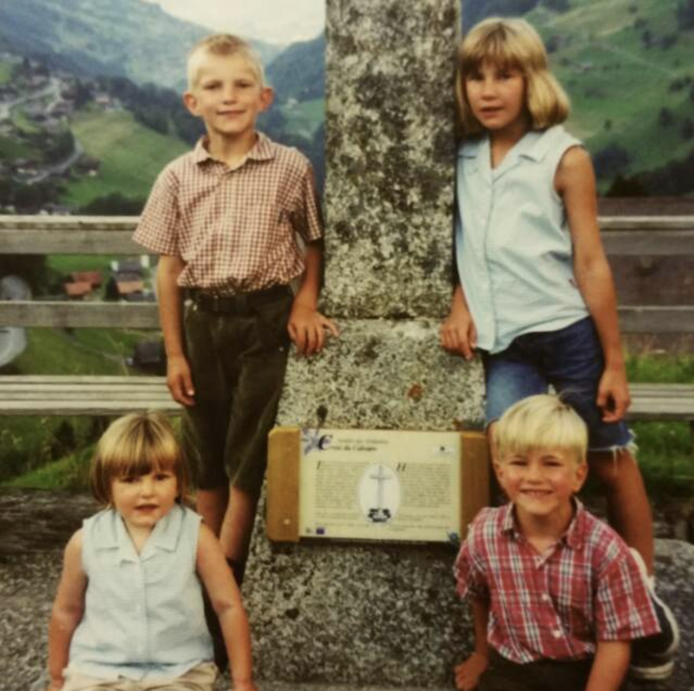
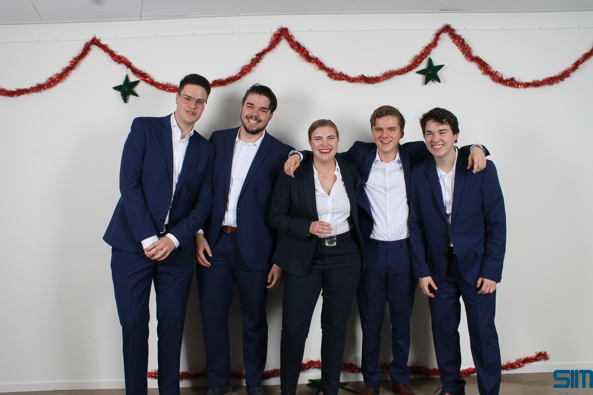
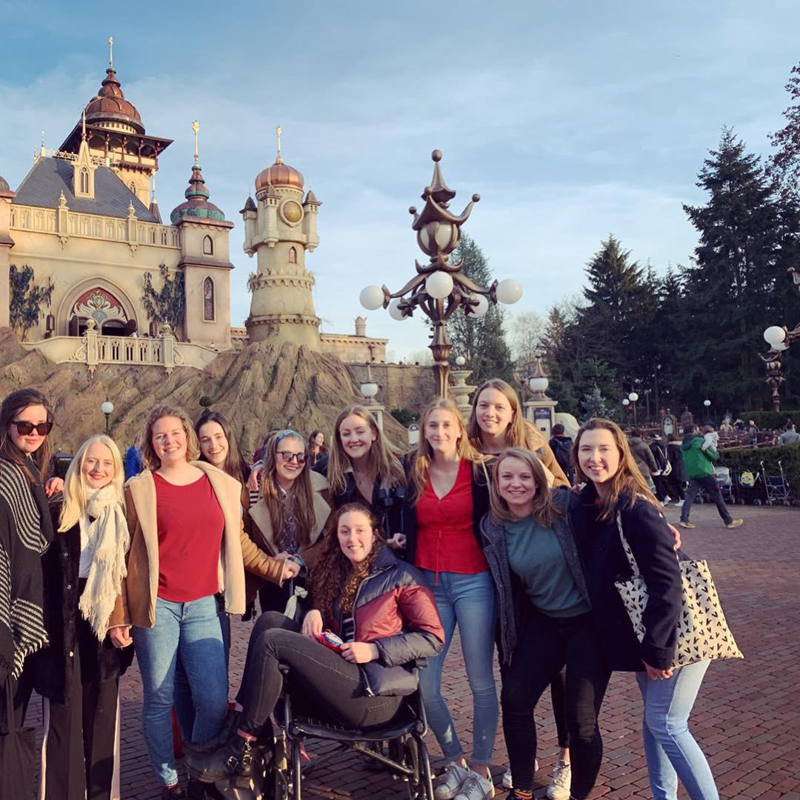
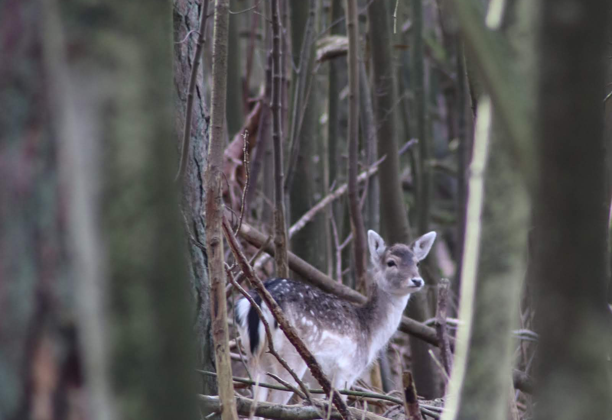
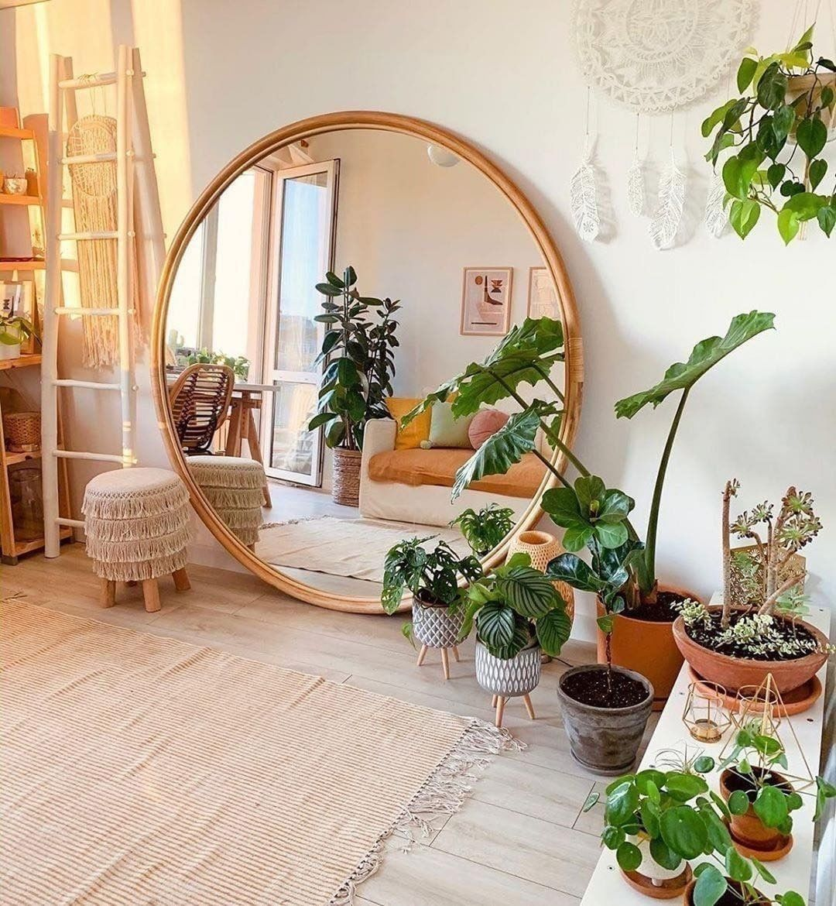

Zoals je waarschijnlijk al hebt gelezen ben ik Doortje de Bles, 23 jaar en opgegroeid als een oud hollands kaasmeisje in Alkmaar. Ik heb twee broers en een zus, dus het was bij ons altijd gezellig druk. Ik denk dat ik hierdoor altijd wel de gezelligheid op zoek. Gezelligheid wat ik bijvoorbeeld bij mijn studievereniging vind, of bij mijn studentenvereniging. Hier heb ik het erg naar mijn zin door bijvoorbeeld in commissies te gaan en een leuke borrel of activiteit te organiseren. Het leukste wat ik heb georganiseerd is een stedentrip naar Lille, waar wij in een dierentuin baby stokstaartjes hebben gezien! Kom op, dat kan je toch niet vergeten haha!

Vanaf jongsafaan vind ik dieren helemaal geweldig en sinds een jaar heb ik, samen met mijn vriend, twee lieve katten. Vroeger was ik veel te vinden tussen de paarden, waar ik ook wedstrijden deed. Doordat ik ging studeren ben ik helaas gestopt, maar wie weet pak ik dit binnenkort weer op!
Voordat ik begon met cmd studeren, ben ik vrijwilligerswerk gaan doen in Kenia. Ik heb hier lesgegeven aan kinderen en ik heb genoten van de tijd die ik daar mocht verblijven. Vanwege de mooie natuur, ben ik daar ook begonnen met fotograferen.
Tegenwoordig heb ik een eigen camera en vind ik het leuk om naar het strand of het bos te gaan om daar te fotograferen. Dit is voor mij echt een oplaadmoment, waar ik veel voldoening uit haal. Ook vind ik het leuk om kleine shoot met vrienden te doen of foto's te maken op evenementen, maar natuur fotograferen blijf ik toch het leukste vinden!
Ik doe veel naast mijn studie, maar ik heb echt mijn plek gevonden binnen het vakgebied. Ik vind het leuk dat ik mijn analytische kant kan mixen met mijn creatieve kant. Ik vind de afwisseling van projecten leuk, omdat dit zorgt dat elke dag weer een nieuwe uitdaging met zich meebrengt. Ik hou van die energie die dat mij geeft en ik leer hier heel veel van. In mijn eerste jaren was ik beter in het onderzoek doen, dus doelgroepanalyses en bedrijfanalyses. Maar door veel te oefenen zie ik een stijgende lijn in de ontwerpen van het werk wat ik lever. Nu ben ik in staat om zelf websites te maken en vind ik dit ook leuk om te doen. Toch wil ik mezelf verder ontwikkelen als user experience designer, omdat ik mijzelf hier het meest in zie groeien. Uiteindelijk zou ik graag een eigen bedrijf willen oprichten of als zzp'er willen gaan werken. Maar dit zijn grote doelen voor later!

Bestuur en SIM
In 2018 ben ik lid geworden van SIM, een studievereniging aan de Haagse Hogeschool. Na een commissiejaar, waarin ik ook voorzitter ben geworden, ben ik in 2019 tot 2020 bestuur geweest. In deze tijd heb ik veel geleerd, zoals besturen in een coronajaar en probleemoplossend denken. Binnen SIM heb ik de kans gekregen om mij sociaal te ontwikkelen en heb ik er een leuke vriendengroep bij!
Haaguit
HaagUit is de introductieweek van de faculteit IT & Design, waar ik in 2018 als eerstejaars ben meegegaan. In 2019 heb ik de SIM promo gedraaid, in 2020 ben ik keukenmedewerker geweest en in 2021 was ik Leider. Dit jaar ben ik gekozen als Staf, wat betekent dat ik de intro week met vier anderen ga organiseren.

Augustinus
In 2017 ben ik tijdens mijn eerste studie bij de studentenvereniging Augustinus gegaan. Hier heb ik super leuke meiden ontmoet, waarmee ik een Cordial heb gevormd. Ook ben ik actief geweest binnen de barcommissie, maar nu ben ik er alleen nog op maandag om met mijn Cordial te eten.

Fotograferen
Sinds ik in Kenia ben geweest, probeer ik beter te worden in fotograferen. Dit is een leuke hobby om volledig tot rust te komen. Ook geeft het veel voldoening als je een mooi plaatje hebt geschoten, waar je trots op bent!

Interieur design
Sinds ik klein ben verbouw ik al mijn eigen kamer en, soms tot ongenoegen van mijn vriend, nu ook ons appartement. Elke keer als ik naar de stad ga, dan moet ik oppassen dat ik niet alles wil kopen. Elke dag zit ik wel even op pinterest om te kijken naar mooie ontwerpen en hoe ik dat in mijn huis zou kunnen toepassen. Na mijn studie wil ik misschien nog een cursus doen, om hier beter in te worden. Maar ik vind het voor nu vooral leuk als hobby en het geeft mij de ruimte om op een andere manier mijn creativiteit te uiten.
De afgelopen jaren heb ik al veel geleerd op de hogeschool, binnen SIM (studieverening) en Augustinus (studentenverniging). Ik heb vaardigheden en kwaliteiten kunnen toepassen en heb daardoor de ruimte gehad om als persoon te kunnen groeien. Tijdens mijn stage hoop ik nog meer te groeien door mee te draaien team, waardoor ik de kans heb om van ieder persoon iets te leren. Door de manier van denken en werkwijze hoop ik nieuwe inzichten te krijgen en een betere visie over wat ik precies wil gaan doen.
Op dit moment ben ik namelijk erg geintresseerd in de user experience design. Voor mij houdt dit in om het onderzoek zo goed mogelijk te koppelen aan een ontwerp. Ik vind het belangrijk om te zorgen dat gebruikers een ontwerp begrijpen, want daardoor wordt de kans groter dat zij het ook echt gaan gebruiken. Ik vind de koppeling richting marketing ook heel leuk, omdat ik denk dat user experience hier ook op toegepast zou kunnen worden.